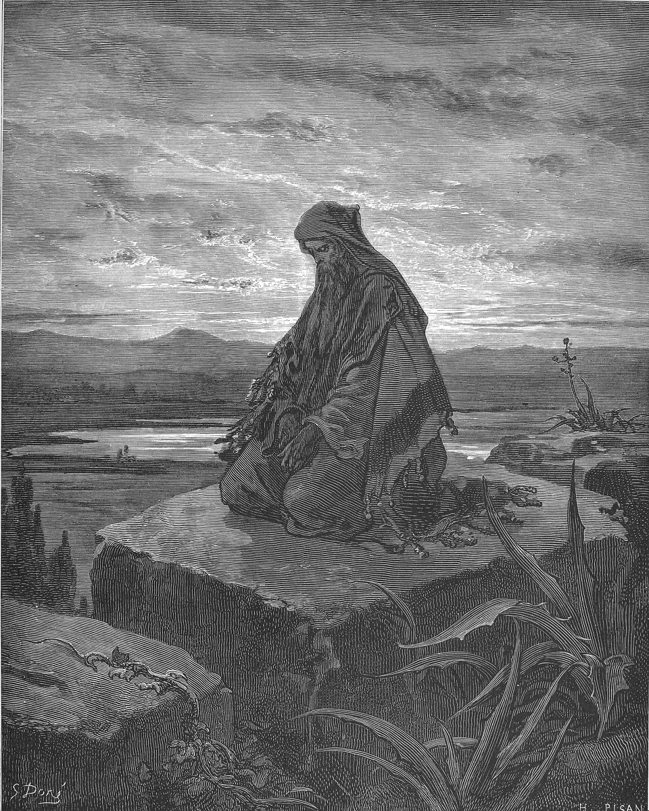

The Messiah
They All Foretold Him
He first findeth his own brother Simon, and saith unto him, We have found the Messias, which is, being interpreted, the Christ.
John 1:41

The talks
- Office What "Messiah" and "Christ" translate, and what anointing meant in Israel. Who got anointed, with what, and by whom. 1 Samuel 16:13, Exodus 29:7, Isaiah 61:1, and Luke 4:16-21, where he reads Isaiah aloud and then sits down.
- Restoration The Book of Mormon prophecies, which are more specific than anything in the Old Testament. 1 Nephi 11:13-33, Mosiah 3:5-10, Alma 7:11-12, and Helaman 14:1-8. Show us what they knew and when they knew it.
- Text Isaiah 53, read whole and read closely. Do not summarize it. Take us through it.
- World What first-century Judea was actually expecting. Find out what a Messiah was supposed to do in the popular hope, why a suffering one was not on the list, and what other men had already claimed the title and failed.
- Witness Samuel the Lamanite on the wall, in Helaman 13 through 16. They shot arrows and threw stones at him and could not hit him. Take him through the questions on the facing page.
- Objection That the prophecies were written after the fact, or stretched to fit. Deal with Micah 5:2 and Zechariah 9:9 specifically, and find out what the Dead Sea Scrolls settled about the dating of Isaiah.
The title
Messiah is Hebrew and Christ is Greek and both of them mean the same ordinary thing: anointed. In Israel, oil was poured on the head of a man being set apart, and it was done for prophets, for priests, and for kings. So when Andrew runs to find his brother and says we have found the Messias, he is not using a vague religious word. He is saying we have found the anointed one, the one all three of those offices were pointing at. Watch what happens in Luke 4. He stands up in the synagogue at Nazareth, reads from Isaiah 61, "The Spirit of the Lord is upon me, because he hath anointed me," closes the book, sits down, and says this day is this scripture fulfilled in your ears. He is claiming the title in his hometown, out loud, from the text. They tried to throw him off a cliff for it. Keep that in mind all week, because this cohort is about the promises, and the promises had teeth. People had been waiting on them for centuries, and when the answer came it did not look like what most of them had been waiting for.
Required reading, for every speaker in this cohort
- Isaiah 53
- Luke 4:16-30
- 1 Nephi 11:13-33
- Alma 7:9-13
- Helaman 14:1-13
Questions for thought
- Isaiah 53 is written in the past tense about something that had not happened. What does that do to a reader?
- Alma 7:11-12 says he would take upon him our pains and sicknesses, not only our sins. What does that add that the cross alone would not?
- If you had been raised on the promises in Isaiah and had never read the Gospels, what would you have expected the Messiah to do first?
- Samuel the Lamanite gave the sign of five years and then a night with no darkness. What is the risk a prophet takes by naming a date?
- Nazareth had known him since he was a boy. Why do you think that made the claim harder to hear rather than easier?
- Find one messianic claimant in Jewish history other than Jesus. What happened to his movement after he died?
- Micah 5:2 names the town. Why would a prophecy specify a place instead of a person?
- Anointing was for prophets, priests, and kings. Pick one of the three and show it in his ministry.
- What is the difference between waiting for something and being ready for it?